ENGINE UNIT > INSTALLATION |
| 1. INSTALL KNOCK CONTROL SENSOR |
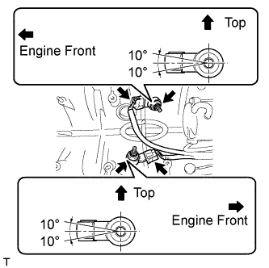 |
Install the 2 sensors with the 2 nuts as shown in the illustration.
Connect the 2 sensor connectors.
| 2. INSTALL CAMSHAFT POSITION SENSOR |
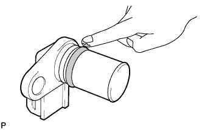 |
Apply a light coat of engine oil to the O-ring.
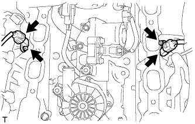 |
Install the 2 sensors with the 2 bolts.
Connect the 2 sensor connectors.
| 3. INSTALL VENTILATION VALVE SUB-ASSEMBLY |
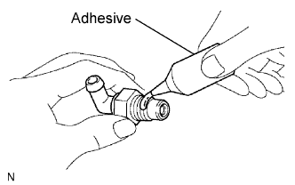 |
Apply adhesive to 2 or 3 threads of the ventilation valve.
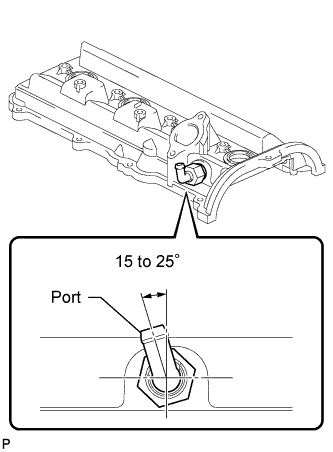 |
Install the ventilation valve to the cylinder head cover sub-assembly LH.
| 4. INSTALL VENTILATION VALVE COVER |
Install the ventilation valve cover to the ventilation valve.
| 5. INSTALL CAMSHAFT TIMING OIL CONTROL VALVE ASSEMBLY LH |
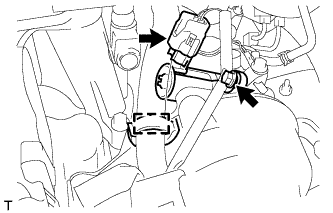 |
Install a new O-ring to the camshaft timing oil control valve.
Apply a light coat of engine oil to the O-ring.
Install the camshaft timing oil control valve with the bolt.
Connect the camshaft timing oil control valve connector and wire harness clamp.
| 6. INSTALL CAMSHAFT TIMING OIL CONTROL VALVE ASSEMBLY RH |
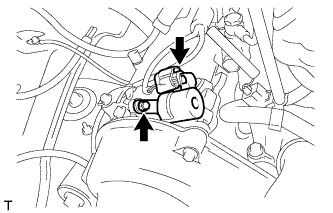 |
Install a new O-ring to the camshaft timing oil control valve.
Apply a light coat of engine oil to the O-ring.
Install the oil control valve with the bolt.
Connect the camshaft timing oil control valve connector.
| 7. INSTALL ENGINE OIL LEVEL SENSOR |
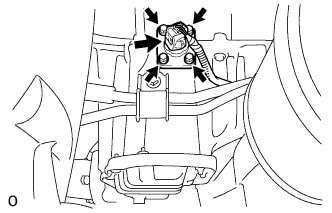 |
Clean the oil level sensor installation surface.
Install a new gasket and the oil level sensor with the 4 bolts.
Connect the oil level sensor connector.
| 8. INSTALL CRANKSHAFT POSITION SENSOR |
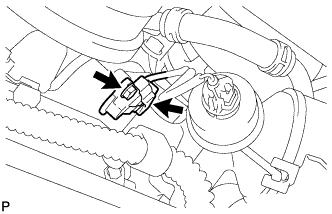 |
Install the sensor with the bolt.
Connect the sensor connector.
| 9. INSTALL STARTER ASSEMBLY |
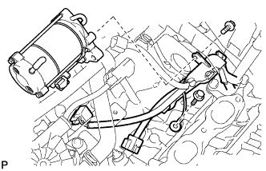 |
Connect the starter wire with the nut.
Connect the starter connector.
Connect the starter to the cylinder block.
Connect the ground wire with the bolt.
Connect the engine wire protector to the starter with the bolt.
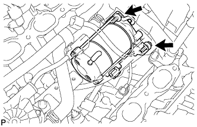 |
Install the starter with the 2 bolts.
| 10. INSTALL REAR WATER BY-PASS JOINT |
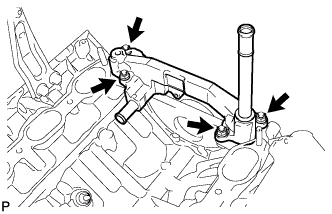 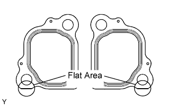 |
Install 2 new gaskets and the water by-pass joint with the 4 nuts.
| 11. INSTALL AIR PUMP WITH BRACKET AND AIR SWITCHING VALVE (w/ Secondary Air Injection System) |
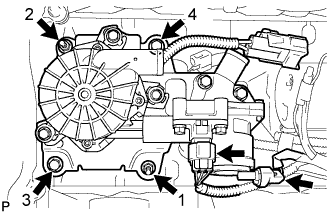 |
Install the air pump with bracket with the 2 bolts and 2 nuts in the order shown in the illustration.
Connect the pressure sensor connector.
Connect the air switching valve connector.
| 12. INSTALL NO. 2 AIR INJECTION SYSTEM HOSE (w/ Secondary Air Injection System) |
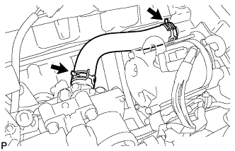 |
Install the hose.
| 13. INSTALL NO. 1 AIR SWITCHING VALVE ASSEMBLY (w/ Secondary Air Injection System) |
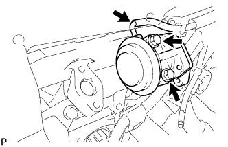 |
Install a new gasket and the No. 1 air switching valve to the rear water by-pass joint with the 2 bolts.
Connect the vacuum switching valve hose to the No. 1 air switching valve.
| 14. INSTALL NO. 2 AIR SWITCHING VALVE ASSEMBLY (w/ Secondary Air Injection System) |
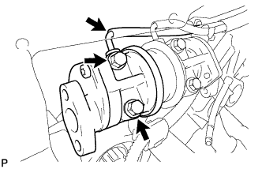 |
Install a new gasket and the No. 2 air switching valve to the rear water by-pass joint with the 2 bolts.
Connect the vacuum switching valve hose to the No. 2 air switching valve.
| 15. INSTALL WATER BY-PASS PIPE SUB-ASSEMBLY |
Apply soapy water to the O-ring.
Install a new O-ring to the water by-pass pipe.
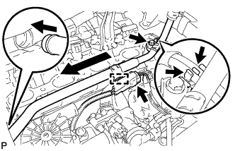 |
Push in the water by-pass pipe.
Install the water by-pass pipe with the bolt.
Connect the 2 vacuum switching valve hoses to the water by-pass pipe clamp.
Connect the wire harness clamp.
Connect the connector.
| 16. INSTALL FRONT WATER BY-PASS JOINT |
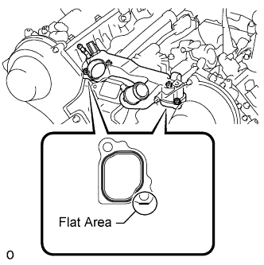 |
Install 2 new gaskets and the water by-pass joint with the 4 nuts.
| 17. INSTALL ENGINE COOLANT TEMPERATURE SENSOR |
Install a new gasket to the sensor.
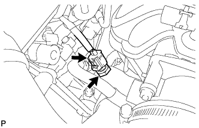 |
Using a 19 mm deep socket wrench, install the sensor.
Connect the sensor connector.
| 18. INSTALL WATER INLET HOUSING |
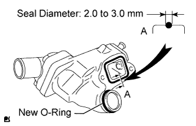 |
Apply soapy water to a new O-ring and install it to the water inlet housing.
Apply seal packing in a continuous line to the places shown in the illustration.
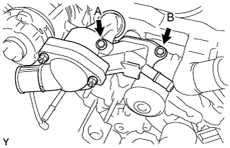 |
Temporarily install the water inlet housing with the 2 bolts.
| Item | Length |
| Bolt A | 77 mm (3.03 in.) |
| Bolt B | 22 mm (0.866 in.) |
| 19. CONNECT ENGINE WIRE |
Connect the ground wire to the No. 5 bearing cap and install the bolt, as shown in the illustration.
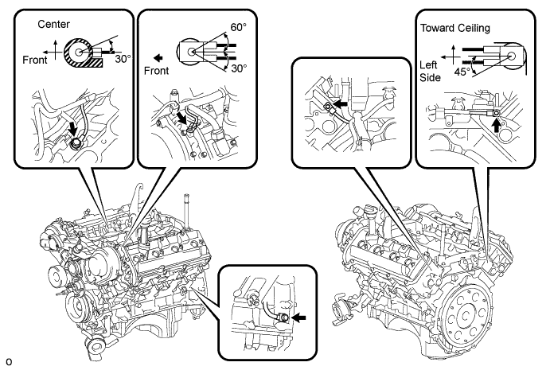
Connect the ground wire to the left side of the engine and install the bolt.
Connect the ground wire to the inside left side of the V-bank and install the bolt, as shown in the illustration.
Connect each ground wire to the cylinder head and cylinder head LH rear side and install the 2 bolts, as shown in the illustration.
| 20. INSTALL IGNITION COIL ASSEMBLY |
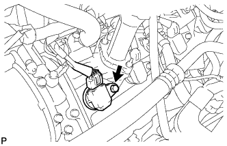 |
Install the 8 ignition coils with the 8 bolts.
Connect the 8 ignition coil connectors.
| 21. INSTALL INTAKE MANIFOLD |
Install the intake manifold (Click here).
| 22. INSTALL OIL FILTER ASSEMBLY |
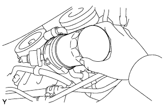 |
Clean and check the oil filter installation surface.
Apply clean engine oil to the gasket of a new oil filter.
Lightly screw the oil filter into place by hand. Tighten it until the gasket contacts the seat.
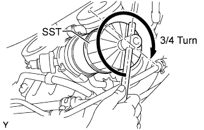 |
Using SST, tighten the oil filter. Choose from the following to tighten the oil filter.
Using a torque wrench, tighten the oil filter.
Tighten the oil filter a 3/4 turn by hand or with a common wrench.
| 23. INSTALL OIL COOLER PIPE |
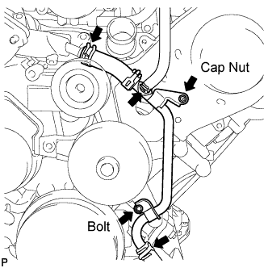 |
Using needle-nose pliers, grip the claws of the clamps and slide the clamps to connect the 3 water by-pass hoses.
Install the oil cooler pipe with the cap nut and bolt.
| 24. INSTALL OIL COOLER HOSE |
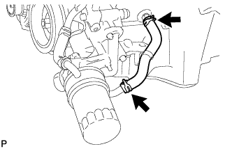 |
Using needle-nose pliers, grip the claws of the clamps and slide the clamps to connect the oil cooler hose.
| 25. INSTALL FRONT NO. 1 ENGINE MOUNTING BRACKET LH |
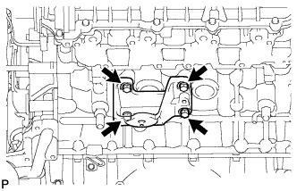 |
Install the engine mounting bracket with the 4 bolts.
| 26. INSTALL FRONT NO. 1 ENGINE MOUNTING BRACKET RH |
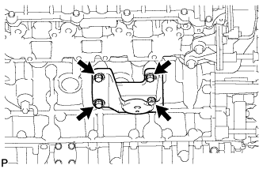 |
Install the engine mounting bracket with the 4 bolts.
| 27. INSTALL FRONT ENGINE MOUNTING INSULATOR LH |
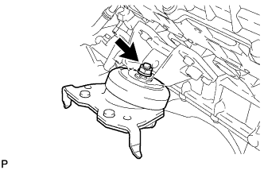 |
Install the engine mounting insulator with the nut.
| 28. INSTALL FRONT ENGINE MOUNTING INSULATOR |
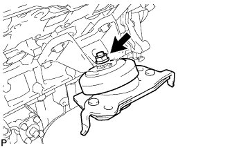 |
Install the engine mounting insulator with the nut.
| 29. INSTALL NO. 2 WIRING HARNESS HEAT INSULATOR |
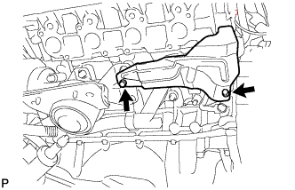 |
Install the wiring harness heat insulator with the 2 bolts.
| 30. INSTALL EXHAUST MANIFOLD SUB-ASSEMBLY LH (w/o Secondary Air Injection System) |
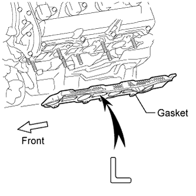 |
Place a new gasket on the cylinder head with the "L" mark facing the manifold side.
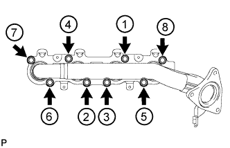 |
Temporarily install the exhaust manifold with 8 new nuts, and then uniformly tighten the nuts in several steps, in the sequence shown in the illustration.
| 31. INSTALL EXHAUST MANIFOLD SUB-ASSEMBLY RH (w/o Secondary Air Injection System) |
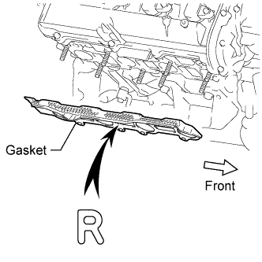 |
Place a new gasket on the cylinder head with the "R" mark facing the manifold side.
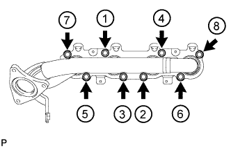 |
Temporarily install the exhaust manifold with 8 new nuts, and then uniformly tighten the nuts in several steps, in the sequence shown in the illustration.
| 32. INSTALL EXHAUST MANIFOLD SUB-ASSEMBLY LH (w/ Secondary Air Injection System) |
Place a new gasket on the cylinder head with the "L" mark facing the manifold side.
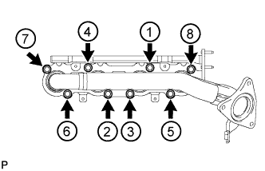 |
Temporarily install the exhaust manifold with 8 new nuts, and then uniformly tighten the nuts in several steps, in the sequence shown in the illustration.
| 33. INSTALL EXHAUST MANIFOLD SUB-ASSEMBLY RH (w/ Secondary Air Injection System) |
Place a new gasket on the cylinder head with the "R" mark facing the manifold side.
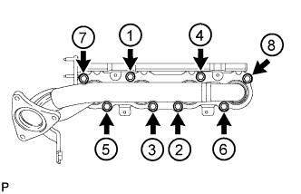 |
Temporarily install the exhaust manifold with 8 new nuts, and then uniformly tighten the nuts in several steps, in the sequence shown in the illustration.
| 34. INSTALL NO. 3 AIR TUBE (w/ Secondary Air Injection System) |
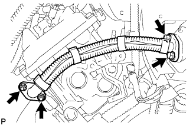 |
Install a new gasket and connect the No. 3 air tube to the exhaust manifold with the 2 nuts.
Install a new gasket and connect the No. 3 air tube to the No. 2 air switching valve with the 2 bolts.
| 35. INSTALL AIR TUBE SUB-ASSEMBLY RH (w/ Secondary Air Injection System) |
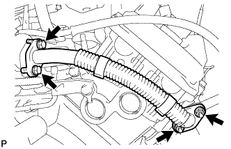 |
Install a new gasket and connect the air tube to the exhaust manifold with the 2 nuts.
Install a new gasket and connect the air tube to the No. 1 air switching valve with the 2 bolts.
| 36. INSTALL ENGINE OIL LEVEL DIPSTICK GUIDE |
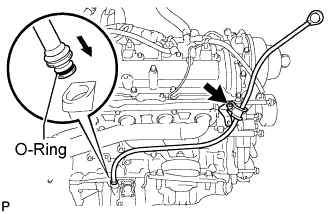 |
Apply a light coat of engine oil to a new O-ring.
Install a new O-ring to the guide.
Install the dipstick guide with the bolt.
Install the dipstick.